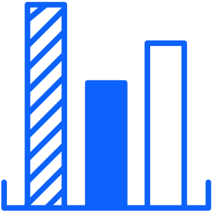

Logo
ReferenceThe Slalom wordmark, one of the four approved files, with its clear space built in.
Markup
<span class="sl-logo" style="--sl-logo-h:32px"><img src="../assets/logos/slalom-logo-blue-RGB.svg" alt="Slalom"></span>Slalom branding pack
32 framework-free patterns for microsites and HTML deliverables. Each one uses only the pack's tokens, Slalom Sans and approved assets. Copy the markup, load slalom-components.css and slalom-components.js, and set the composition's one secondary color with a sl-tone class.
The Slalom wordmark, one of the four approved files, with its clear space built in.
<span class="sl-logo" style="--sl-logo-h:32px"><img src="../assets/logos/slalom-logo-blue-RGB.svg" alt="Slalom"></span>The official five-swatch bar: Slalom Blue, Cyan, Coral Red, Purple, Chartreuse, in that order, equal widths.
<div class="sl-bar" role="presentation" style="height:8px">
<span class="sl-bar-swatch" style="background:var(--slalom-blue)"></span>
<span class="sl-bar-swatch" style="background:var(--cyan)"></span>
<span class="sl-bar-swatch" style="background:var(--coral-red)"></span>
<span class="sl-bar-swatch" style="background:var(--purple)"></span>
<span class="sl-bar-swatch" style="background:var(--chartreuse)"></span>
</div>The color bar brought to life: five circles in the bar's fixed order, bobbing in sequence.
<span class="sl-cbloader" role="status" aria-label="Loading" style="--sl-dot:12px">
<span class="sl-cbloader-dot" style="background:var(--slalom-blue)"></span>
<span class="sl-cbloader-dot" style="background:var(--cyan);animation-delay:.15s"></span>
<span class="sl-cbloader-dot" style="background:var(--coral-red);animation-delay:.3s"></span>
<span class="sl-cbloader-dot" style="background:var(--purple);animation-delay:.45s"></span>
<span class="sl-cbloader-dot" style="background:var(--chartreuse);animation-delay:.6s"></span>
</span>One approved icon from ../assets/iconography/ (index in its README) in one approved color.

<img class="sl-icon" src="../assets/iconography/bar-chart.svg" alt="" width="64" height="64">
<span class="sl-icon-mask" role="img" aria-label="Results" style="--sl-icon:url('../assets/iconography/bar-chart.svg');--sl-icon-size:64px;background:var(--slalom-dark-blue)"></span>An approved icon on a colored circle, for use over images and busy layouts.
<span class="sl-icon-circle" style="width:96px;height:96px;background:var(--cyan)">
<span class="sl-icon-mask" aria-hidden="true" style="--sl-icon:url('../assets/iconography/award.svg');--sl-icon-size:54px"></span>
</span>The brand palette as a dock of swatches: hover magnifies a swatch and shows its token and hex; click copies the hex.
<div data-sl="color-selector"></div>The four secondary colors in one swatch row, with the same magnify, hex tooltip and click-to-copy as ColorSelector.
<div data-sl="color-selector" data-name="Secondary" data-tokens="cyan coral-red purple chartreuse"></div>A rectangular action with a Slalom Sans Regular label in sentence case.
<button type="button" class="sl-btn sl-btn-primary">Explore the roadmap</button>
<button type="button" class="sl-btn sl-btn-secondary">Let’s talk</button>An outlined call to action: a Slalom Blue line in a 240 × 56 pill with tracked caps.
<a class="sl-lbtn sl-lbtn-cyan" href="#">
<span class="sl-lbtn-line" aria-hidden="true"></span><span class="sl-lbtn-line" aria-hidden="true"></span>
<span class="sl-lbtn-text">Let’s talk</span>
<span class="sl-lbtn-drow1" aria-hidden="true"></span><span class="sl-lbtn-drow2" aria-hidden="true"></span>
</a>A chunky block button: white face, 6px Slalom Blue border and Slalom Dark Blue label on a solid 8px Slalom Dark Blue base that it drops onto when pressed.
<button type="button" class="sl-push">Join the session</button>An inline link in the link color: Slalom Blue on white, white and underlined on black.
<p class="body">Read <a class="sl-link" href="#">how we approach data strategy</a>.</p>An on/off switch: a rectangular track with a square thumb that shows a check when on, so state never relies on color alone.
<label class="sl-toggle"><input class="sl-toggle-input" type="checkbox" role="switch" checked><span class="sl-toggle-track" aria-hidden="true"><span class="sl-toggle-thumb"></span></span><span class="sl-toggle-label body-strong">Show sources</span></label>A 24px square with a 2px ink border that fills Slalom Blue with a white check when checked.
<label class="sl-check"><input class="sl-check-input" type="checkbox" checked><span class="sl-check-box" aria-hidden="true"></span><span class="sl-check-label body">Include appendix</span></label>A 40px button whose three bars become an X.
<button type="button" class="sl-menu" data-sl="menu-toggle" aria-label="Open menu" aria-controls="site-menu"></button>
<nav id="site-menu" hidden>…</nav>The brand's one-rounded-corner surface.
Discover
Understand people before process.
<div class="sl-card sl-card-surface sl-corner-br sl-radius-m">
<p class="sl-card-eyebrow eyebrow">Discover</p>
<h3 class="sl-card-title headline-m">Listen first</h3>
<p class="body">Understand people before process.</p>
</div>A white card with a hairline border that fills Slalom Blue on hover or keyboard focus.
<a class="sl-hcard sl-corner-br sl-radius-m" href="#">
<p class="sl-hcard-eyebrow eyebrow">Service</p>
<h3 class="sl-hcard-title headline-m">Artificial intelligence</h3>
<div class="sl-hcard-body body"><p>Machine learning, generative AI and intelligent products.</p></div>
<span class="sl-hcard-cta body-strong">Explore →</span>
</a>An eyebrow, a headline and a dek, flush left.
Our approach
We help people and organizations dream bigger, move faster, and build better tomorrows for all.
<header class="sl-headline">
<p class="sl-eyebrow eyebrow">Our approach</p>
<h2 class="sl-headline-text headline-l">Better tomorrows, built together</h2>
<p class="sl-dek body">We help people and organizations dream bigger, move faster, and build better tomorrows for all.</p>
</header>A quotation with its attribution and a 2px Slalom Blue rule.
“They listened first. The plan felt like ours from day one.”
<figure class="sl-quote">
<blockquote class="sl-quote-text quote">“They listened first. The plan felt like ours from day one.”</blockquote>
<figcaption class="sl-quote-by"><span class="sl-quote-name quote-name">Sam Okafor</span><span class="sl-quote-title quote-title">Chief people officer</span></figcaption>
</figure>A hero headline whose words rise out of a mask one after another, then a block of the composition's secondary color wipes in behind the words named in data-highlight (one to three words, space-separated).
Our approach
We help people and organizations dream bigger, move faster, and build better tomorrows for all.
<header data-sl="kinetic" data-highlight="together">
<p class="sl-kh-eyebrow sl-eyebrow eyebrow">Our approach</p>
<h1 class="headline-xl">Better tomorrows, built together</h1>
<p class="sl-kh-dek sl-dek body">We help people and organizations dream bigger, move faster, and build better tomorrows for all.</p>
</header>Fades and rises any block into place as it scrolls into view.
Discover
Define
Deliver
<div class="sl-row" data-sl="reveal" data-stagger="120">
<div class="sl-card sl-card-surface sl-corner-br sl-radius-m"><p class="sl-card-eyebrow eyebrow">Discover</p><h3 class="sl-card-title headline-m">Listen first</h3></div>
<div class="sl-card sl-card-cyan sl-corner-br sl-radius-m"><p class="sl-card-eyebrow eyebrow">Define</p><h3 class="sl-card-title headline-m">Shape it together</h3></div>
<div class="sl-card sl-card-surface sl-corner-br sl-radius-m"><p class="sl-card-eyebrow eyebrow">Deliver</p><h3 class="sl-card-title headline-m">Build momentum</h3></div>
</div>A chapter opener: a huge outlined number in Slalom Blue fills from the bottom up, then the title rises in and a rule in the secondary color draws across.
Where we are today
<div class="sl-chapter" data-sl="chapter" data-number="2">
<div class="sl-chapter-body">
<p class="sl-chapter-eyebrow eyebrow">Where we are today</p>
<h2 class="sl-chapter-title headline-l">What we heard from your teams</h2>
</div>
</div>The opening section of a microsite: a kinetic headline beside a photo that wipes open while a flat block of the secondary color settles in behind it, offset to the bottom right.
Data strategy
A 12-week roadmap to put trusted data in the hands of every team.
<section class="sl-hero" data-sl="hero">
<div class="sl-hero-copy">
<header data-sl="kinetic" data-highlight="momentum">
<p class="sl-kh-eyebrow sl-eyebrow eyebrow">Data strategy</p>
<h1 class="headline-xl">Turn your data into momentum</h1>
</header>
<p class="sl-hero-dek descriptor">A 12-week roadmap to put trusted data in the hands of every team.</p>
<div class="sl-hero-actions"><a class="sl-btn sl-btn-primary" href="#">Explore the roadmap</a><a class="sl-btn sl-btn-secondary" href="#">Let’s talk</a></div>
</div>
<div class="sl-hero-media">
<div class="sl-hero-frame sl-corner-br sl-radius-l"><img src="../assets/photography/horizon.jpg" alt="A horizon at sunrise"></div>
</div>
</section>A slow band of short phrases looping across the page, separated by squares in the secondary color.
<div class="sl-mq sl-mq-accent" data-sl="marquee" aria-label="Capabilities" style="--sl-mq-dur:30s">
<ul class="sl-mq-group"><li>Strategy</li><li>Data and AI</li><li>Customer experience</li><li>Modern engineering</li><li>Change that sticks</li></ul>
</div>A big Slalom Blue figure that counts up once in view.
Faster onboarding
44%
New hires reach full productivity in five weeks, down from nine.
<div class="sl-stat" data-sl="stat" data-value="44" data-suffix="%" data-bar="44">
<p class="sl-stat-label eyebrow">Faster onboarding</p>
<p class="sl-stat-num">44%</p>
<p class="sl-stat-caption body">New hires reach full productivity in five weeks, down from nine.</p>
</div>A 10 × 10 grid of squares where the share fills in Slalom Blue cell by cell, beside a counting figure.
<figure class="sl-waffle" data-sl="waffle" data-value="62">
<figcaption class="sl-waffle-text">
<span class="sl-waffle-num">62<span class="sl-stat-suffix">%</span></span>
<span class="sl-waffle-label subhead">of customers</span>
<span class="sl-waffle-caption body">say they would switch providers after one poor digital experience.</span>
</figcaption>
</figure>Labelled horizontal bars that grow in turn once in view.
<ul class="sl-mbars" data-sl="bars" data-max="100">
<li class="sl-mbar" data-value="38"><div class="sl-mbar-head"><span class="sl-mbar-label body-strong">Self-service analytics</span><span class="sl-mbar-value body-strong">38%</span></div></li>
<li class="sl-mbar sl-mbar-hi" data-value="72"><div class="sl-mbar-head"><span class="sl-mbar-label body-strong">Trusted executive reporting</span><span class="sl-mbar-value body-strong">72%</span></div></li>
<li class="sl-mbar" data-value="54"><div class="sl-mbar-head"><span class="sl-mbar-label body-strong">Automated data quality</span><span class="sl-mbar-value body-strong">54%</span></div></li>
</ul>Two panels in one frame with a handle the reader drags to wipe between them: before on the left, after on the right.
Five weeks to onboard
One portal, guided from day one.
Nine weeks to onboard
Five systems, three logins and a binder of how-tos.
<div class="sl-cmp" data-sl="compare" data-before-label="Today" data-after-label="Tomorrow">
<div class="sl-cmp-layer sl-cmp-after"><div style="background:var(--slalom-blue);color:var(--white);padding:var(--space-6) var(--space-5);display:flex;flex-direction:column;align-items:flex-end;text-align:right"><p class="headline-m" style="max-width:40%">Five weeks to onboard</p><p class="body" style="max-width:40%">One portal, guided from day one.</p></div></div>
<div class="sl-cmp-layer sl-cmp-before"><div style="background:var(--light-gray);color:var(--black);padding:var(--space-6) var(--space-5)"><p class="headline-m" style="max-width:40%">Nine weeks to onboard</p><p class="body" style="max-width:40%">Five systems, three logins and a binder of how-tos.</p></div></div>
</div>A team member card: a portrait with one rounded corner, or a large monogram on the secondary color when there is no <img> (the script makes it from the name), with a Slalom Blue bio panel that slides up on hover.
<article class="sl-pcard" data-sl="profile">
<div class="sl-pcard-media sl-corner-br sl-radius-l"><div class="sl-pcard-bio body">Alex has led customer experience programs for 12 years and starts every project by riding along with frontline teams.</div></div>
<div class="sl-pcard-meta"><h3 class="sl-pcard-name subhead">Alex Rivera</h3><p class="sl-pcard-title body-small">Engagement lead</p></div>
</article>One large quote at a time under an oversized Slalom Blue quotation mark, cross-fading to the next, with segment progress, a counter and square previous and next buttons.
For the first time, our field teams and our data teams are looking at the same numbers.
They listened first. The plan felt like ours from day one.
We shipped in ten weeks what we had been talking about for two years.
<section class="sl-qc" data-sl="quotes" data-interval="7000" aria-label="Customer quotes">
<figure class="sl-qc-slide"><blockquote class="sl-qc-text">For the first time, our field teams and our data teams are looking at the same numbers.</blockquote><figcaption class="sl-qc-by"><span class="quote-name">Jordan Lee</span><span class="sl-qc-title quote-title">VP of operations</span></figcaption></figure>
<figure class="sl-qc-slide"><blockquote class="sl-qc-text">They listened first. The plan felt like ours from day one.</blockquote><figcaption class="sl-qc-by"><span class="quote-name">Sam Okafor</span><span class="sl-qc-title quote-title">Chief people officer</span></figcaption></figure>
<figure class="sl-qc-slide"><blockquote class="sl-qc-text">We shipped in ten weeks what we had been talking about for two years.</blockquote><figcaption class="sl-qc-by"><span class="quote-name">Maria Chen</span><span class="sl-qc-title quote-title">Head of digital</span></figcaption></figure>
</section>